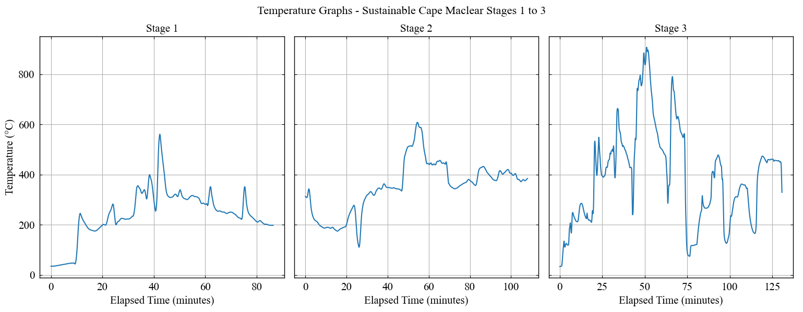

Adaptations to incinerators
The objectives of this work were twofold: assess the environmental and operational impact of the incinerators—especially their effect on local air quality—and implement targeted improvements to the design and functionality. This document outlines the specific adaptations introduced to two incinerators–one located at the Billy Riordan Memorial Clinic and one at the Sustainable Cape Maclear waste deposit site–and presents the measurable results the changes had on emissions and overall system efficiency.
1 Summary of Main Technical Adaptations
Based on the initial assessment of two incinerators, which construction is detailed here, several key issues were identified after one year of operation. The issues limited the performance and posed environmental and health risks to the operators. To address them, a series of technical adaptations aimed at improving combustion efficiency, structural durability, and user safety are proposed:
- Structural reinforcement. Cracks and weak points in the combustion chambers were repaired and re-cemented. Several damaged bricks were replaced, improving heat retention and the structural longevity of the system.
- Chimney enlargement and extension. The original chimneys (75 mm diameter, 3 m height) restricted airflow and caused excessive smoke buildup. They were replaced with wider and taller chimneys (160 mm diameter, 4 m height), improving draft and allowing for more complete combustion (decreasing particulate matter).
- Removal of cyclone separator. The initial incinerator’s construction at Sustainable Cape Maclear incorporated a cyclone separator downstream the second combustion chamber. Unfortunately, one year of operation was enough to clog it completely, failing to capture particulate matter and, more importantly, causing the smoke to evacuate though the separator and incinerator’s cracks, but not the chimney. The separator was removed to reduce flow resistance in the exhaust pathway and improve airflow.
- Air vent installation. Additional adjustable air vents were added to the secondary combustion chambers to optimize oxygen intake. This facilitated ignition, enhanced flame stability, and improved the overall burning process.
- Rotating chimney cap. A chimney cap was added to both incinerators to direct the smoke upwards, promoting dispersion into the atmosphere and preventing it from settling at ground level. This directly addressed complaints from nearby residents about smoke stains and poor air quality.
- Ergonomic loading hatch. The steel handle on the waste loading door was repositioned to the correct side, improving ergonomics and safety during use.
- Modified waste loading drum. A halved metal drum with handlebars was introduced as a safe and reusable alternative to plastic bags for waste loading. This solution reduced operational costs and allowed for safe mid-combustion waste insertion.
- Safety fence at the clinic. A chicken wire fence was installed around the clinic’s incinerator to restrict access for third parties, a simple but important addition for the planned opening of a maternity ward nearby.
These adaptations were designed not only to bring the incinerators closer to the performance standards of those, specified in the documentation of the original De Montfort Mark 8A model, but also to ensure practical usability, safety, and sustainability in the specific context of Cape Maclear.
2 Costs of adaptations
To ensure consistency across reporting, all the cost calculations were converted from MWK to USD with an exchange rate of 2,000 MWK/USD.
| Category | Details | Price (MWK) | Price (USD) |
|---|---|---|---|
| Cement | Fixing cracks | 137,500 | 68.75 |
| Bricks | Replacing cracked bricks | 36,000 | 18.00 |
| Sand | To mix with cement | 18,000 | 9.00 |
| Bolts & nuts | M10 | 8,000 | 4.00 |
| Timber wire | - | 18,000 | 9.00 |
| Labor | 2 days of work (builder and helper) | 34,000 | 17.00 |
| Chimneys | 8 meters in total, 160 mm diameter | 650,000 | 325.00 |
| Welding | Chimneys and air vents | 100,000 | 50.00 |
| TOTAL | for two incinerators | 1,001,500 | 500.75 |
| Total per incinerator | - | 500,750 | 250.38 |
3 Waste sorting & ash management
To reduce emissions and improve combustion efficiency by incinerating only the desired material, a basic waste sorting system was introduced. Additionally, an ash pit was built at the waste deposit site for safer ash disposal, and a simple chicken-wire filter was constructed to remove the non-ash residues before storage.
4 Incinerator Performance Improvements
The modifications made to both incinerators led to clear and measurable improvements in combustion efficiency and structural performance:
- Higher Combustion Temperatures. After the interventions, the maximum combustion temperatures increased from 663°C to 846°C at the Billy Riordan Memorial Clinic and from 372°C to 907°C at Sustainable Cape Maclear. These temperature gains indicate more complete and stable combustion, theoretically decreasing the concentration of dioxins.

Reduced Waste-to-Ash ratio (W2A). The amount of unburnt solid waste is represented by the Waste-to-Ash ratio. After adaptations to the incinerators, W2A dropped considerably, reflecting better fuel utilization. At the clinic W2A dropped from 22.1% to 10.2% and at waste deposit, from 39.4% to 17.1%.
Improved airflow and structural integrity. Larger chimney and added air vents led to increased airflow and easier incinerator’s ignition. Repaired cement and brickwork improved heat retention, while the new chimney cap helped reduce localized smoke buildup. Together, these improvements brought the systems closer to the intended De Montfort Mark 8A incinerator performance standard while ensuring more consistent and cleaner operation in the field.
5 Air Quality Improvements & Measurements
A central goal of this project was to reduce harmful emissions from incineration — particularly the fine particulate matter (PM), which poses significant health risks when inhaled. Throughout the improvement process, the concentrations of PM1.0, PM2.5, and PM10 in the vicinity of two incinerators were monitored with a particulate matter monitor. The results demonstrate a significant decrease in airborne pollutants after all modifications were introduced.
| Particle size | Concentration before improvements \({\rm [\mu g/m^3]}\) | Concentration after improvements \({\rm [\mu g/m^3]}\) |
|---|---|---|
| PM1.0 | 58.13 | 8.31 |
| PM2.5 | 66.13 | 10.23 |
| PM10 | 77.63 | 4.65 |
| Particle size | Concentration before improvements \({\rm [\mu g/m^3]}\) | Concentration after improvements \({\rm [\mu g/m^3]}\) |
|---|---|---|
| PM1.0 | 40.12 | 3.07 |
| PM2.5 | 48.34 | 3.08 |
| PM10 | 73.88 | 3.09 |
After the improvements to the incinerators, all PM values fell below the WHO’s recommended 24-hour exposure thresholds, which classify concentrations above 35 µg/m³ for PM1.0 and PM2.5 and above 75 µg/m³ for PM10, as dangerous. In contrast, the initial incinerators emitted as much particulate matter as open burning piles. The final version of the incinerators now emit less particulate matter on average, than it was measured in the air of Cape Maclear.
These outcomes validate the technical interventions and demonstrate that small-scale incineration, when properly optimized, can offer a safe and sustainable alternative to uncontrolled waste burning.
6 Health & Environmental Impact
The upgrades to both incinerators had a noticeable positive effect on the health and safety of workers, clinic staff, and nearby residents.
Before improvements, the incinerators produced thick, dark smoke due to incomplete combustion and poor airflow. Workers frequently reported symptoms like coughing, eye irritation, and shortness of breath — especially at the waste deposit site, where a clogged chimney forced emissions through the cyclone separator at ground level.
After modifications, these health issues were drastically reduced. The workers can load waste without needing masks or eye protection the clinic staff and patients no longer reported indoor smoke or window staining. Finally, the risk of environmental contamination from open ash deposits was mitigated with the introduction of ash pits and better waste sorting.
In the wider context, the cleaner incinerators now contribute to overall village air quality improvement, especially when compared to the severe pollution generated by open waste burning. The ability to reduce airborne PM below background levels shows that incineration, when well-designed, can serve not only as a safe disposal method but also as a public health intervention.